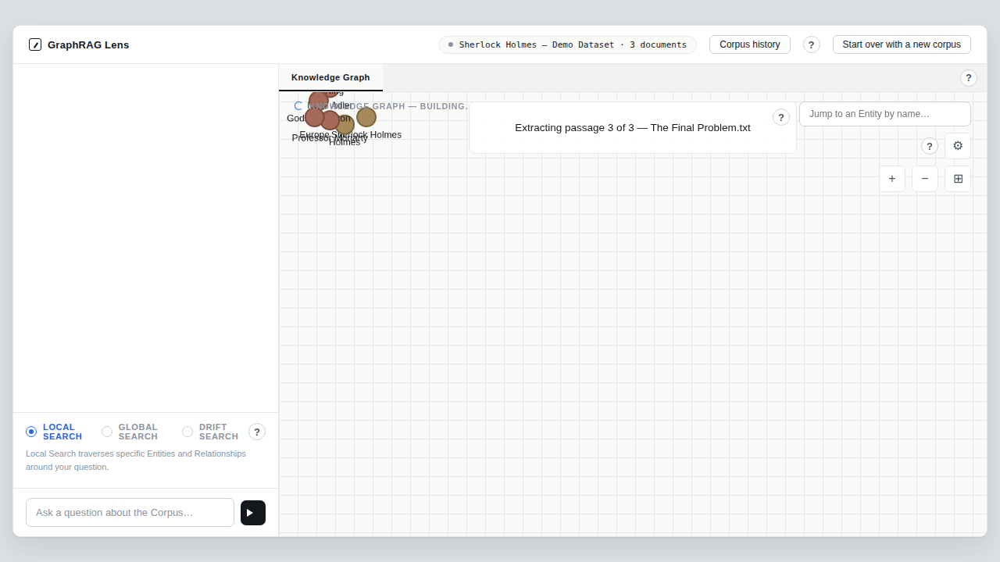
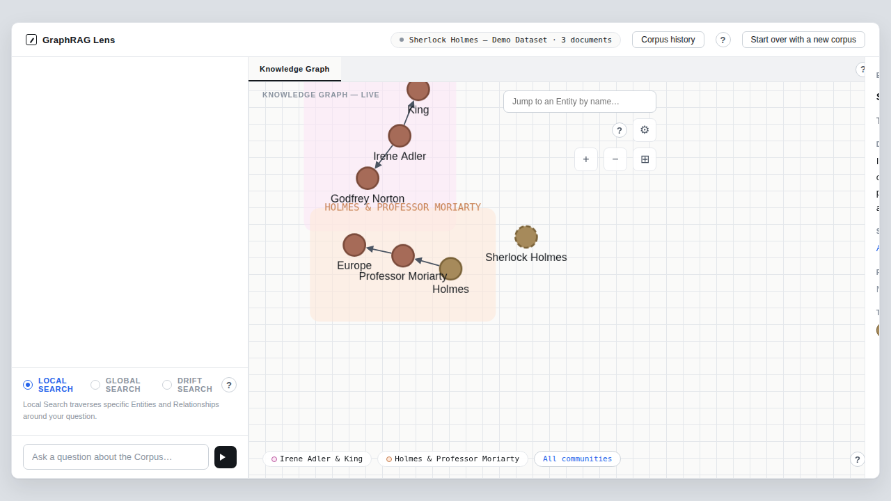
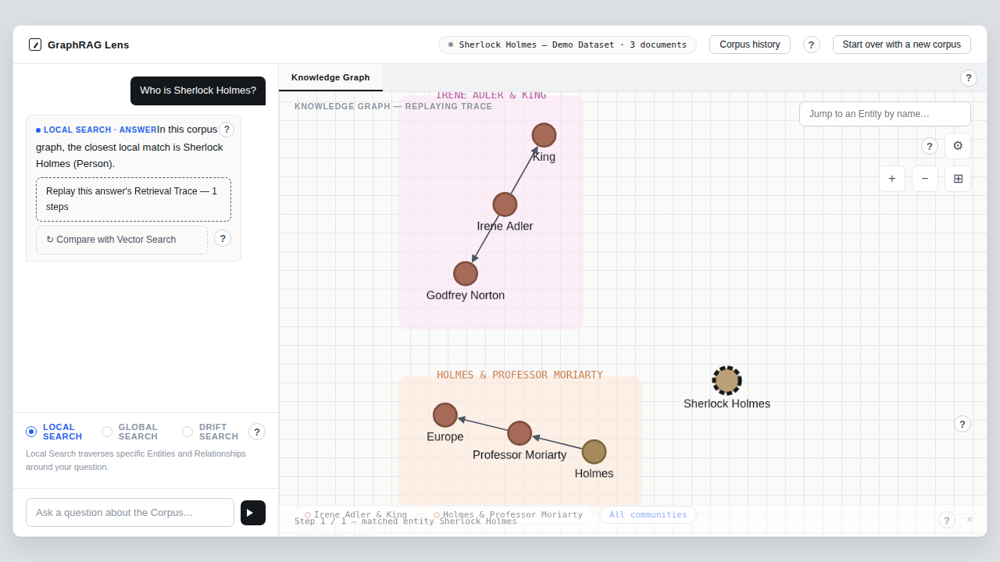
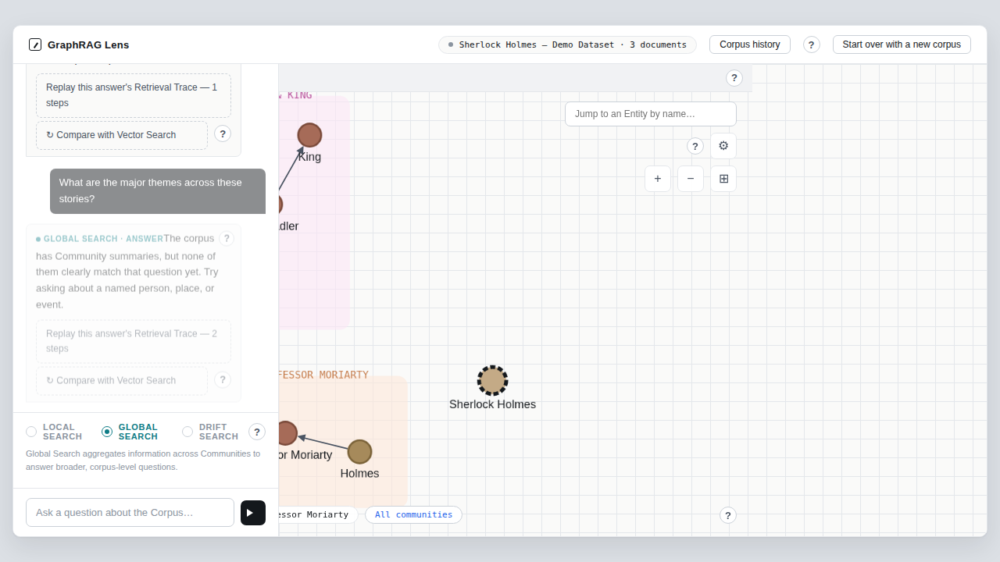
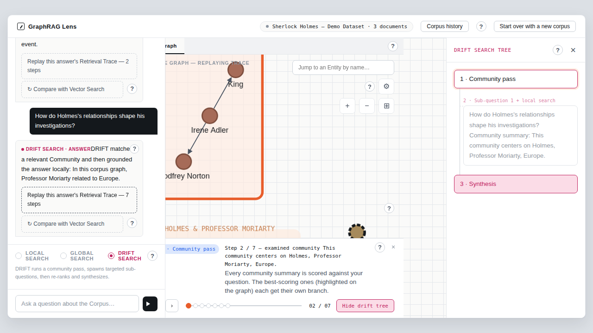
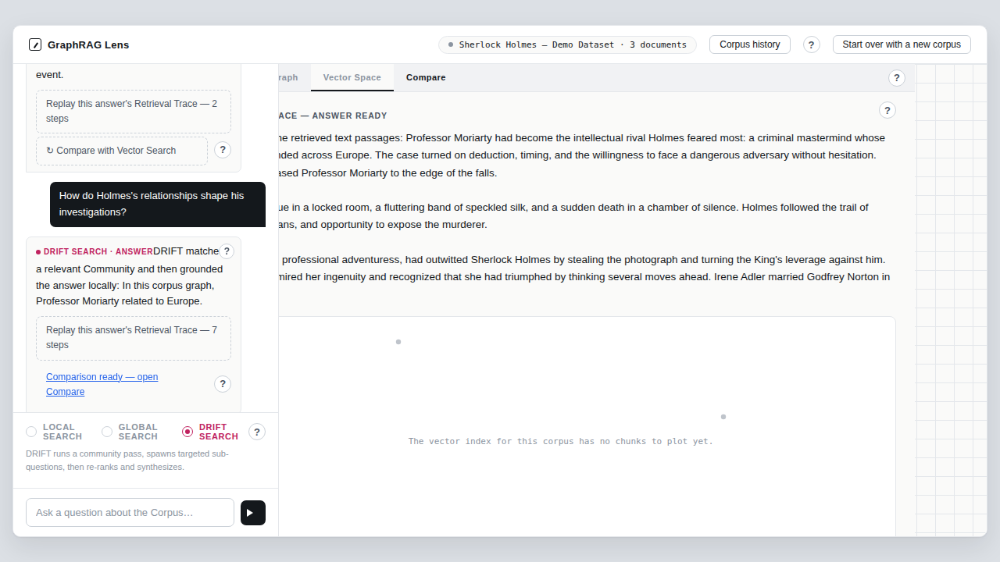

Watch it being built
Most GraphRAG tools hide the index build behind a progress bar. Lens streams every extracted entity, relationship and community to the browser the moment it is persisted, so the graph grows on the canvas passage by passage.
GraphRAG Lens turns your documents into a knowledge graph in front of your eyes, lets you question it in three GraphRAG modes, and replays the exact path every answer took through the graph. Built for teaching, demos and for understanding the technique before you bet on it.
[n] markers that can only point at passages the search readRetrieval-Augmented Generation gives a language model the right passages before it writes. The question is how you find those passages. GraphRAG's answer is to first turn the corpus into a graph of entities and relationships, cluster that graph into communities, and then retrieve by walking structure instead of only matching similar text.
Most GraphRAG tools hide the index build behind a progress bar. Lens streams every extracted entity, relationship and community to the browser the moment it is persisted, so the graph grows on the canvas passage by passage.
Each answer carries a Retrieval Trace: the ordered list of entities, relationships, communities and passages it touched. A scrubber replays it step by step on the graph, in the DRIFT tree or, for the vector baseline, on its similarity ranking.
Every panel has a ? button that explains the canonical GraphRAG idea, what this demo actually does, and where it simplifies. The site you are reading is built from those same explanations.
Upload plain text or PDF, or load the built-in Sherlock Holmes demo. Ingestion runs asynchronously and reports every step over a server-sent event stream, so the browser draws the graph while it is still being built.
Each document is cut into overlapping passages so no fact is lost at a boundary.
The LLM returns typed entities with descriptions and the relationships between them.
"Holmes" and "Sherlock Holmes" become one node. Descriptions, provenance and weights merge.
Leiden clustering groups tightly linked entities. Groups of three or more get an LLM-written title and summary.
Entities and community summaries are embedded for meaning-based matching. The vector baseline is built in parallel.

Extraction, resolution and persistence happen per Text Unit, not at the end. Each write is a corpus-scoped MERGE into Neo4j, and each write fires a progress event: text-unit-extracted, entity-extracted, relationship-extracted, community-detected, then ingestion-complete.
corpusId.The detail panel shows an entity's type, its merged description, its relationships, and the source passages it was extracted from. Shaded regions are communities. A one-line legend lists the largest ones; "All communities" lists every community by size.
Types colour the nodes, communities colour the regions, and the two palettes are deliberately different so they never blend.

All three modes follow one pattern: find starting points, assemble a bounded context, record every item as a trace step, and let the LLM write a cited answer. They differ in where they start.
Start at the entities closest to the question and walk their one-hop neighbourhood into the passages they came from.
The question is embedded and the three closest entities (by name: description) become seeds. From there the search takes up to ten relationships touching the seeds, highest weight first, and up to five source passages those entities and relationships were extracted from. The model sees everything numbered and must cite passages inline.

Read the community summaries, pick the ones that match the question, and answer from them and their most relevant passages.
Built for "what is this corpus about?". Canonical GraphRAG maps the question over community reports and reduces partial answers. Lens takes the three communities whose summaries are closest in meaning, records each as a step, follows each with up to two member passages ranked by relationship weight, and writes one answer over all of it. A corpus with no communities yet gives an honest "no answer" with the reason.

Prime the search with communities, spawn a sub-question for each promising one, gather Local-style context per branch, then synthesize once over the union.
DRIFT stands for Dynamic Reasoning and Inference with Flexible Traversal. Lens picks up to three candidate communities, derives a sub-question for each, and under every SUB_QUESTION_SPAWNED step collects the same bounded context a Local Search would: seed entities, relationships and passages. One model call then writes the answer from the community summaries plus everything the branches found, de-duplicated. The DRIFT tree draws the branches next to the graph.

An answer is only trustworthy if you can see where it came from. In Lens a citation is a guarantee, not a decoration: it can only point at a passage the search actually read, and that passage is a step of the same trace you can replay.
Holmes confronted Professor Moriarty at the Reichenbach Falls1, after Moriarty had pursued him across Europe2.
[1]..[n], exactly as the model will see them.[i] in the text always means citations[i-1].Under every GraphRAG answer sits a Compare button. It answers the question again, fresh, twice: once in the answer's GraphRAG mode and once with plain vector similarity over 500-character chunks, with no graph at all. The Compare tab lays both out with their sources, key figures and a short verdict.

GraphRAG on the left, Vector Search on the right, each with its [n] markers and Sources list. Under each answer, every passage that side retrieved, cited or not. A source retrieved by both sides is badged "also used by the other side".
The verdict is one or two sentences naming the concrete difference and its reason. With an OpenAI key the model writes it from both answers and the measured figures. Without one, a fixed rule over the figures reports which side retrieved more and how many passages overlap, without judging correctness.
The vector side also shows a similarity ranking: the chunks with the highest cosine scores, each with rank, score bar, document and excerpt, the five used for the answer marked and a cut-off line below them. There is deliberately no 2-D embedding map, because distances in such a projection do not reflect real similarity.
"Replay GraphRAG" starts the usual trace replay on the Knowledge Graph tab. "Replay Vector" stays on the Compare tab and fills the similarity ranking hit by hit, so the two retrieval paths can be watched one after the other.
"Compare all four retrieval methods" runs Local, Global, DRIFT and Vector Search one after the other on the same question. Each gets a column with its answer, its time split into retrieval, embedding and LLM, and its traversal footprint. Below them, one evidence table shows how far every passage got in every method: never retrieved, ranked below the vector cut-off, in the context, or cited. Mark the passage that holds the right answer as expected, and each column names where it got lost: retrieval, ranking or generation. "Download log (JSON)" saves all of it, every traversal step included.
[n] marker: the passage id, its document and an excerpt. Always a step of the same trace.All GraphRAG logic sits in one library, graphrag-core, that imports neither Spring, nor the Neo4j driver, nor LangChain4j. Everything it needs from the outside world goes through five ports. Adapters implement the ports; the core never sees them.
Each port has a small set of abstract methods. Everything else is a default with a sensible fallback, so a minimal adapter works and a richer one overrides what it does natively. Community detection defaults to connected components; the Neo4j adapter swaps in GDS Leiden.
Many corpora share one store. Every node and relationship carries a corpusId, every MERGE is keyed by it, and vector index searches are filtered by it.
LLM and embedding errors propagate and nothing is retried automatically. The app turns them into a FAILED corpus status or an error response, never into a quietly degraded answer.
synthesizesAnswers() and isSemantic() tell the use cases whether a real model is behind a port. When there is none, they fall back to deterministic behaviour instead of pretending.
Without an OPENAI_API_KEY the app runs fully offline with deterministic stand-ins for the model and the embeddings. That is why the project's CI and every test run with the key unset, and why the screenshots on this page are from the offline demo.
| Stage | With an OpenAI key | Offline (no key, or the Offline Demo) |
|---|---|---|
| Extraction | LLM per passage, typed entities with descriptions | Regex and sentence-based stub |
| Communities | GDS Leiden, LLM-written title and summary | GDS Leiden (or connected components in memory), templated summary |
| Seed matching | Embedding similarity, top 3 | Keyword matcher with fuzzy overlap |
| Answers | LLM-written with [n] citations | Deterministic templates, no citations |
| Vector baseline | LLM-written with chunk citations | Joined chunk texts |
| Compare verdict | LLM verdict, at most two sentences | Rule-based summary of the key figures |
One docker compose up builds the app image, starts Neo4j with the Graph Data Science plugin next to it, and serves the app on port 8080. There is nothing else to install.
http://localhost:8080, upload a .txt or .pdf, or load the Sherlock Holmes demo.Neo4j's data is bind-mounted to ./neo4j-data/ next to the compose file, so corpora survive restarts. Retrieval Traces live only in the app's memory and are cleared on restart; re-run a query to capture a fresh one.
# clone and start the whole stack git clone https://github.com/JohannesRabauer/graph-rag-visualisation.git cd graph-rag-visualisation OPENAI_API_KEY=sk-... docker compose up
# build and test from source the way CI does (JDK 25, Maven 3.9+, Docker) env -u OPENAI_API_KEY mvn -B install
Tests run with the key unset on purpose: with a key the Spring and Playwright UI tests would call the real model and stop being deterministic. The Neo4j tests use Testcontainers and download the GDS plugin.
The web app is one way of plugging in graphrag-core. The library itself is plain Java with no framework dependencies, versioned and released independently as dev.rabauer.graphrag:graphrag-core. Bring your own parser, model, embedding and store by implementing five small interfaces.
| Use case | What it does |
|---|---|
| IngestCorpus | Validates uploads and builds a corpus from parsed documents. |
| ExtractEntitiesAndRelationships | Splits into Text Units, extracts per passage, resolves duplicates, persists as it goes. |
| DetectCommunities | Clusters the graph, keeps groups of three or more, asks the model for a title and summary. |
| EmbedGraphElements | Embeds entities and community summaries for meaning-based seed matching. |
| ConstructVectorIndex | Builds the baseline: chunks, embeddings and a fitted 2-D projection. |
| AnswerLocalSearch | Seeds on entities and walks their one-hop neighbourhood into cited passages. |
| AnswerGlobalSearch | Answers from the top community summaries and their most relevant passages. |
| AnswerDriftSearch | Communities, sub-questions, Local-style context per branch, one synthesis. |
| AnswerVectorBaseline | Top-5 chunks by cosine similarity, synthesized and cited the same way. |
| CompareAnswers | Runs a GraphRAG mode and the baseline fresh, measures both, produces a verdict. |
| CompareAllModes | Runs all four methods, times each by stage and builds one evidence table across them. |
Clone the repository, start the stack, load the demo, and see your first knowledge graph build in minutes.